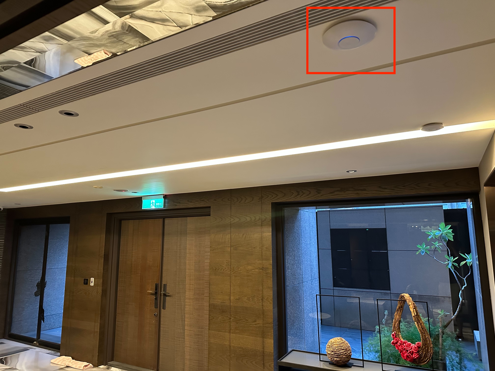
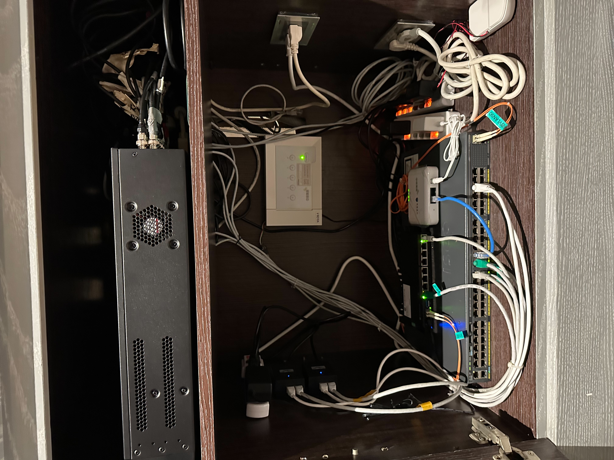

Structured infrastructure decisions around workload placement, network flow, service dependencies, and the practical realities of operating across cloud and on-prem environments.
Technical Profile
Cloud, infrastructure, and network depth built through operations and systems design.
I work across cloud infrastructure, platform operations, wired and wireless network deployment, monitoring, and service delivery with a bias toward clarity, repeatability, and production readiness.
Technical Profile
Operational strengths ordered around where the market is paying the most attention now.
The sequence below is intentionally cloud-first: hyperscaler platforms and cloud-native delivery remain the strongest center of demand, followed by automation, observability, and then on-site network execution. This is an inference from current cloud-native adoption data and hyperscaler momentum.
中文領域包含：居家網路設計與架設、辦公環境網路架設、網路專業顧問、系統架構師實務與混合雲環境整合。
Priority 01
Cloud Platforms & Hybrid Architecture
- AWS / Azure / Google Cloud service evaluation and rollout planning
- Cloud compute, storage, identity, and virtual network design
- Hybrid connectivity thinking across datacenter, office, and cloud boundaries
- Production-readiness reviews for workload placement and service dependencies
- Architecture decisions shaped around scale, resilience, and operational clarity
Priority 02
Cloud-Native Operations
- Container-oriented service delivery and workload standardization
- Linux-based platform operations across modern application environments
- Release coordination, environment consistency, and production hardening
- Operational support for distributed services with clear ownership boundaries
Priority 03
Automation & Configuration
- Ansible-driven provisioning and rebuild workflows
- Shell scripting and Python for operational automation
- Repeatable service installation, validation, and deployment preparation
- Delivery workflows that reduce manual steps and drift between environments
Priority 04
Observability & Diagnostics
- Elasticsearch / Logstash / Filebeat
- Grafana / Kibana / Graphite
- Redis / Kafka as supporting telemetry and queue layers
- Incident investigation flows built around faster signal correlation
- Monitoring strategy for service health, log visibility, and alert readiness
Priority 05
Enterprise & Home Network Deployment
- Cisco / Juniper / Dell / Fortigate / Brocade
- Layer 2 switching, uplinks, AP rollout, and gateway integration
- Wi-Fi coverage planning for residential and business spaces
- Structured cabling, cabinet organization, and endpoint turn-up
- Installation quality focused on both aesthetics and supportability
Priority 06
Delivery & Supporting Infrastructure
- GitHub / GitLab / Jenkins / Docker
- Nginx / Apache / HAProxy
- VMware / Citrix / oVirt / KVM / VirtualBox
- Tomcat / Node.js / Bind / ActiveMQ
- MSSQL / MySQL / MariaDB / PostgreSQL
- OpenLDAP / Samba / OpenVPN / iSCSI
Priority 07
Operating Systems
- Red Hat
- CentOS
- Ubuntu
- Debian
- Unix-like systems
- Windows
Priority 08
Programming & Data Work
- Shell script
- Python
- HTML / CSS
- SQL
- C++
- SPSS
Execution Themes
Repeated patterns in the work I have delivered.
The strongest throughline is practical execution: design the right cloud and network foundation, deploy cleanly, expose the right signals, and leave the environment easier to operate than before.
Supported modern service environments with Linux operations, container-friendly delivery thinking, and clearer operating conditions across staging and production.
Built Ansible playbooks and deployment workflows to install, rebuild, and validate service environments quickly while reducing repetitive manual work.
Standardized logs and metrics with Elasticsearch, Redis, Kafka, Graphite, Filebeat, Logstash, Grafana, and Kibana so incidents could be detected earlier and investigated with less guesswork.
Planned and deployed local network environments that combine switching, gateways, Wi-Fi access points, and endpoint connectivity into a reliable working footprint for homes, offices, and customer-facing spaces.
Deployment Results
Finished residential network deployment shown through the actual on-site outcome.
These two photos show the completed install state: a clean ceiling-mounted access point footprint in the living environment, and the integrated cabinet stack that brings switching, gateway, and service connectivity together.
Result 01
Ceiling-mounted access point integrated into the finished space
The finished result shows more than signal coverage. It reflects placement discipline, visual integration with the interior, and a deployment decision that balances wireless performance with the look of the space itself.

Result 02
Integrated cabinet stack for switching, gateway, and service distribution
The cabinet view demonstrates the operational side of the project: uplink clarity, hardware placement, service interconnection, and an install state that remains understandable after handoff and future maintenance.

Working Style
Design the platform. Deploy the network cleanly. Expose the right signals.
Good infrastructure should reduce ambiguity for both engineers and operators. I prefer systems and network layouts that are explicit, traceable, and easy to maintain.